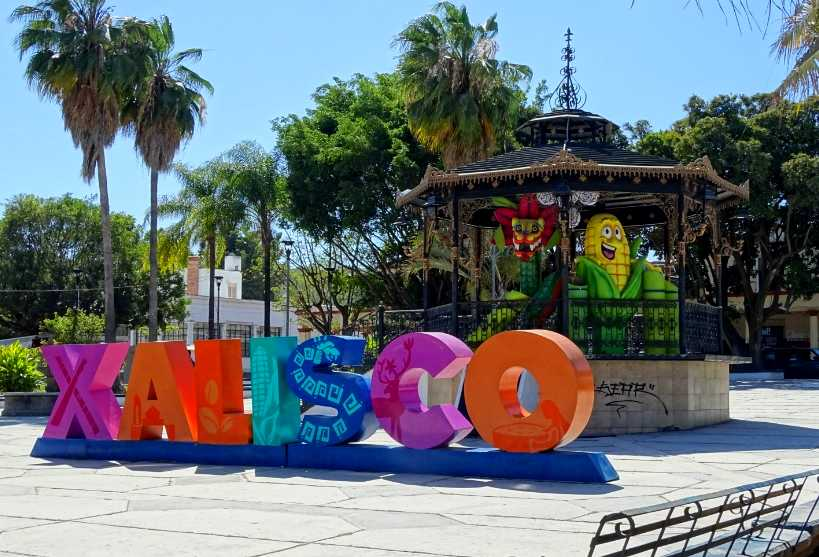
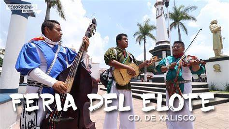
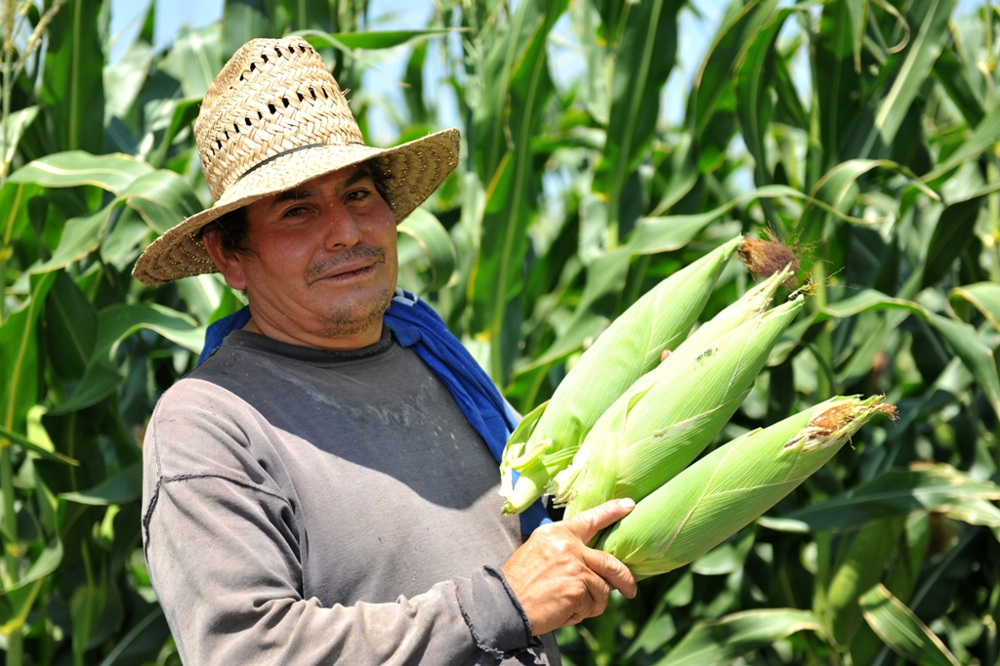

Xalisco es un municipio ubicado en la region centro de Nayarit, Mexico. Limita al norte con Tepic, al sur con San Blas, al este con la Sierra de Nayarit, y al oeste con el municipio de Bahia de Banderas. Es un municipio que se encuentra cerca de la capital del estado, Tepic.
Las fiestas mas destacadas de Xalisco son las celebraciones en honor a la Virgen de Guadalupe, que se realizan cada 12 de diciembre. Tambien tiene lugar la fiesta en honor a San Sebastian, el patron de la localidad, que se celebra el 20 de enero con musica, danzas y eventos religiosos.
La agricultura es una actividad importante en Xalisco, destacando la produccion de maiz, frijol, caña de azucar y otros cultivos. Ademas, la ganaderia tambien tiene presencia en la region, y los productos derivados de la leche son relevantes. El comercio en la region ha crecido por su cercan a con Tepic y otras areas turisticas.
